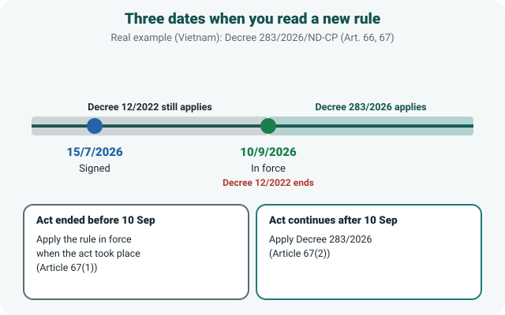

K10 · Digital skills, AI and workplace rules › Level 4 Proficient
Read a new regulation and turn it into action
This lesson completes Sheet 7: Regulation tracking sheet. Print template. It teaches how to read and apply a regulation. It is not legal advice. For important matters, ask your legal team or a lawyer. The worked examples use Vietnamese regulations. The method works for rules in any country.
1. Objectives
- Fill in a tracking sheet for a regulation: number, issuing body, date issued, effective date, what it replaces, transitional rules.
- Turn a clause into a task with an owner, a deadline and evidence.
2. Retrieval warm-up
- What are the 6 boxes of a one-page project?
- When a milestone is at risk, what three choices do you give the decision-maker?
Answers
- Goal; scope; milestones; roles; dependencies; risks.
- Move the date; cut scope; add resources.
Review: Run a lean project.
3. Explanation
In many senior roles, you are the first person to read a new rule. It may be a law, a decree, an internal policy or a client's standard. The reading method is the same.
Step 1. Read the first and last parts first. The first part has the number, the issuing body and the signing date. The last part has the "entry into force" and "transitional provisions" articles.
Step 2. Separate three dates. The signing date is not the effective date. A regulation applies only from its effective date. A draft that has not been passed does not apply yet.
Step 3. Find what it replaces. A new regulation usually states the date the old one ceases to apply. Update every internal document that still cites the old one.
Step 4. Read the transitional rules. Events before the effective date often still follow the old rule. This is where people often go wrong.
Step 5. Turn clauses into tasks. Each relevant clause becomes one line: what to do, who, by when, what evidence.

Consolidated texts. When a law has been amended several times, the state may publish a consolidated text that merges all the changes. It is easier to read. When you cite it, give both the consolidated text number and the original law.
Which rule wins? When two rules differ, the one with higher legal force applies. If the same body issued both, the later one applies. (This is the general approach in Vietnam; check the rule in your own country.)
Sheet 7. Regulation tracking sheet
- IdentifyNumber, issuing body, signing date, official source.
- EffectDate it applies, what it replaces.
- TransitionWhich rule covers earlier events.
- Relevant clausesOnly those that touch your team's work.
- Task tableTask · Who · Deadline · Evidence.
Do not rely on online summaries or AI answers. Always open the original text from an official source and note the date you checked.
4. Workplace example
Hypothetical scenario (Vietnam). Mai is a senior HR specialist at a garment factory. In August 2026, she is asked to update the factory's labour compliance checklist.
The old checklist cites Decree 12/2022/ND-CP as the basis for penalties. She has heard there is a new decree.
She opens the original text. The first part: Decree 283/2026/ND-CP, issued by the Government on 15/7/2026. The last part, Article 66: in force from 10/9/2026. Decree 12/2022/ND-CP ceases to apply on the same day.
She reads Article 67 on transition. A violation that ended before 10/9/2026 is handled under the rule in force at that time. A violation still continuing after that date falls under the new decree.
She fills in Sheet 7, then makes a task table:
| Task | Who | Deadline | Evidence |
|---|---|---|---|
| Change the checklist's legal basis to Decree 283 | Mai | 05/9 | New version of the checklist |
| Review any ongoing violations and fix them before 10/9 | Department supervisors | 08/9 | Review record |
| Send to the company's legal team for checking | Mai | 01/9 | Reply email |
She does not interpret the penalty amounts herself. She asks the legal team to confirm that part.
Why this works: she reads the original, not rumours. She separates the signing date from the effective date. The task table has owners, deadlines and evidence. The legal questions go to the right people.
5. Practice
Hypothetical scenario (Vietnam). You are a senior payroll accountant at a retail company with shops in several provinces. At the end of 2025, you are asked to update the minimum wage rules. The new text is Decree 293/2025/ND-CP.
Find the original text from an official source. Fill in the first 4 boxes of Sheet 7. Write 2 lines of the task table.
If you work outside Vietnam, do the same exercise with your own country's latest minimum wage rule.
Hint 1
Open the decree's last article. It gives the effective date and the text it replaces.
Hint 2
The company has shops in several provinces. Read the article on how to decide which wage region applies to each branch.
Model answer
- Identify: Decree 293/2025/ND-CP, issued by the Government on 10/11/2025.
- Effect: from 01/01/2026 (Article 5(1)). Decree 74/2024/ND-CP ceases to apply on the same day (Article 5(2)).
- Relevant clauses: Article 3 (regional minimum wages, how regions are decided) and Article 4 (how the minimum wage is applied).
- Task 1: match each shop's location with the annex list of regions. Who: you. Deadline: 15/12/2025. Evidence: a table of shops and regions.
- Task 2: find pay rates below the new minimum and propose adjustments. Who: you and the HR head. Deadline: 20/12/2025. Evidence: an approved list.
For the amounts, read Article 3 in the original text. This lesson does not copy them, to avoid errors.
6. Self-check
Choose an answer. Every option has an explanation.
Question 1. A decree is signed on 15 July and enters into force on 10 September. On 20 August, which rule applies?
-
Not quite. The signing date is not the start date. A rule applies only from its effective date.
-
Correct. Correct. Until the effective date, the old rule still applies.
-
Not quite. There is no gap. The old rule ends only when the new one takes effect.
Question 2. You read: "Parliament is discussing an extra paid public holiday." What should you do with the company's leave calendar?
-
Not quite. A draft that has not passed does not apply, and its content may still change.
-
Correct. Correct. Watching early helps you prepare, but you apply it only when it is in force.
-
Not quite. Ignoring it may leave you unprepared. Keep watching so you can act in time.
Question 3. An internal company policy and a decree say different things about the same matter. What do you do?
-
Not quite. Internal policies must not conflict with the law. They need to be checked and fixed.
-
Correct. Correct. Reporting and fixing the document stops others from making the same mistake.
-
Not quite. Compliance does not depend on what suits your department.
Question 4. A colleague sends you an AI-written summary of a decree. What is the right next step?
-
Not quite. A summary may have the wrong number, date or content. Do not use it as the basis.
-
Correct. Correct. Only the original text is the basis. A summary is just a guide.
-
Not quite. Spreading an unchecked summary may lead the whole department to act wrongly.
Question 5. A violation took place and ended before the new decree took effect. Under Article 67 of Decree 283/2026/ND-CP, which rule applies?
-
Not quite. The discovery date does not decide it. Article 67 looks at when the act took place.
-
Correct. Correct. This is the transitional rule in Article 67(1).
-
Not quite. Article 67 does not say this. Read the regulation's own transitional provisions.
7. Reflection
- Which internal document at your workplace may still cite a rule that no longer applies?
- Where do you usually learn about new rules: the original text, the news, or what others tell you?
8. Real-world application
In the next 7 days, choose a rule that affects your work. Open the original text. Complete Sheet 7, with the date you checked. Ask someone who knows the law, or your legal team, to review it.
Last updated: 14/11/2026. Sources checked against the original texts (example: Vietnam): Decree 283/2026/ND-CP of 15/7/2026 (Articles 66, 67), in force from 10/9/2026. Decree 293/2025/ND-CP of 10/11/2025 (Articles 3, 4, 5), in force from 01/01/2026. Law on Promulgation of Legal Documents 64/2025/QH15, amended by Law 87/2025/QH15. Text used: consolidated text 54/VBHN-VPQH of 11/8/2025 (Articles 4, 53, 57, 58, 65). An amended Labour Code was still before the National Assembly on the date checked.
9. Metadata
| skill | K10 · Digital skills, AI and workplace rules |
|---|---|
| level | Level 4 · Proficient |
| group | N4 |
| framework_map | WEF: Technological literacy; CSfW: 1b Work with roles, rights and protocols; 3e Work in a digital world; SkillsFuture CCS: Digital Fluency; Sense Making; DigComp 3.0; NACE: Critical Thinking (reference only) |
| original | Vietnamese version |
| updated | 2026-11-14 |
Finish the lesson
Mark it as done and the site suggests reviews after 1, 3 and 7 days. The data stays on your device only.
Suggested reviews: